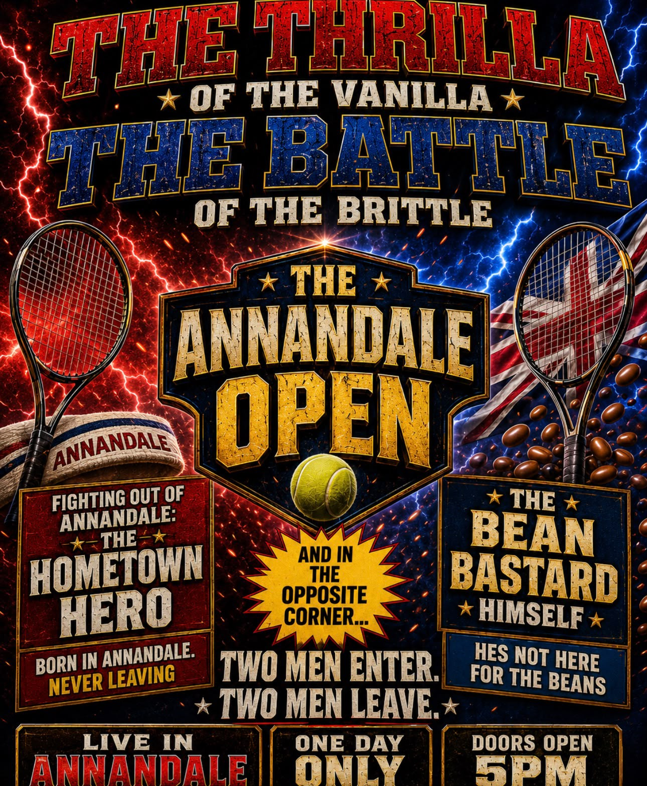

2026 Annandale Open

| Date | 8 August 2026 |
|---|---|
| Venue | Annandale, Virginia |
| Sponsored by | Bush's Baked Beans |
| Main event | Julian vs. Dan |
| Sports | Tennis, field goals, wing eating |
| Attendance | Four adults and two children |
| Overall winner | Dan (the Bean Bastard) |
The 2026 Annandale Open, sponsored by Bush's Baked Beans, was a multi-sport contest held in Annandale, Virginia, on 8 August 2026. The event pitted the at-the-time hometown hero, Julian, against the visiting British challenger Dan, known to spectators as the Bean Bastard. It began after a brief rain delay and was attended by a record home crowd of four adults and two children.
Although advertised as a friendly tennis match, the Open expanded to include a field-goal competition and a wing-eating tiebreaker. Dan finished the day undefeated, while Julian left with a draw, no victories, and a boxed portion of unfinished wings.[1]
Background
Following the rain delay, organisers staged the national anthem beside ceremonial American-flag trousers and conducted a pre-game interview before preparing for what they had optimistically described as “competitive tennis”.
The Annandale Canning
Dan won the opening set 6–0. His serves were described as sufficiently concussive to frighten both children from the venue, reducing youth attendance by 100 percent. Julian responded with a succession of defensive shots which Dan later characterised as “crap balls”.
At 0–3, the competitors participated in an interval referred to as halftime. Julian acknowledged that Dan was “kicking my ass”, estimated the serves at 100 miles per hour and classified all of his own returns as moonballs. When Julian insisted that he was quite good compared with the interviewer, Dan was asked for an independent assessment and replied that Julian was terrible.
The remaining sets followed the same structure. Dan served; Julian survived. Julian later told the remaining spectators, “This is the most embarrassing thing that's happened to me today.” Which begs the question of how many times a day he is normally embarrassed.
Dan completed all three sets undefeated. Julian maintained that he had scored two points; Dan attributed both to his own errors.
Field-goal competition
Julian then declared that real men return to their old high-school field and kick field goals. The women and children were uninterested, leaving Greg and Alex to officiate as the pair commenced a second contest. Julian's elaborate preparations repeatedly produced wild kicks, while Dan struck the uprights and crossbar with increasing consistency. During one attempt, Dan delayed until the wind died down and stated that he could feel it in his hair. Both competitors eventually converted from 40 yards, and the event was declared a draw.
Wing tribunal
Julian immediately demanded a further tiebreaker: a wing-eating competition judged by a vegan. Before touching wing tips and commencing the feast, Dan made an honourable disclosure that his own wings might be smaller.
Dan employed head-oriented spicy-water-shedding technology and finished every wing he ordered. Julian failed to finish his portion and attempted to conceal the resulting takeout container, which became known in subsequent reporting as the box of shame.
A restaurant employee later confirmed that Julian had eaten “a little bit”, prompting immediate objections from the victorious camp.
Official results
- Tennis: Dan, three sets to none
- Children frightened away: two
- Field goals: draw, both successful from 40 yards
- Wing eating: Dan, by complete consumption
- Meals placed into a box of shame: one
- Dan's record: two victories, one draw, zero unfinished wings
- Julian's record: no victories, one draw, one doggy bag
References
- The 2026 Annandale Open: Official Event Record. Annandale Organising Committee, 2026.